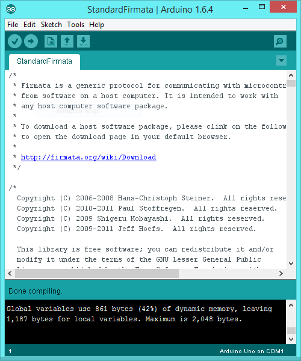
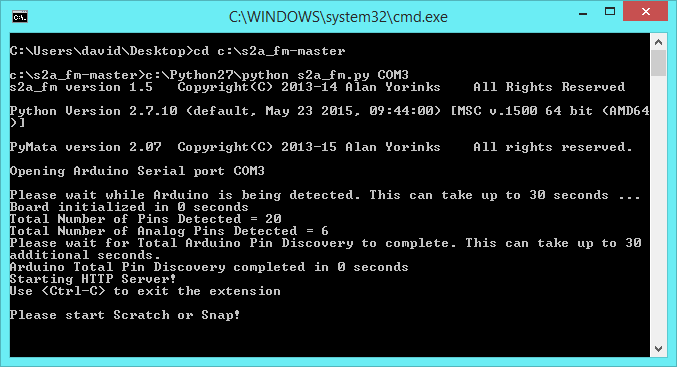

Another project describes how the interface between a Scratch 2 program and an Arduino microcontroller can be built. However, that project is based on using a Linux operating system and many users will want to use Windows. This note describes the installation process to achieve the same result on Windows 8.1.
The base software consists of:
The latest version of the Arduino IDE can be found at http://www.arduino.cc/en/Main/Software. Download the 'Windows Installer' option from the list on the right and run it. Connect the Arduino microcontroller (I used a UNO) to a usb port, start the IDE and look under Tools>Port to find the name of the usb port. This will be used later.
Scratch 2 has been written in Adobe ActionScript, which means installing Adobe Air (which is free). Go to https://scratch.mit.edu/scratch2download/ to install Adobe Air and the Scratch 2 Offline Editor. Just follow the instructions on the page.
Download Python from http://python.org/ (for example Windows x86-64 MSI installer) and run the executable to install, using the default location of C:Python27. You need to choose the option for current user, rather than for all users (which is the default). Then the installation puts an entry in the registry for python under HKEY_CURRENT_USER. Otherwise the installation of pySerial (see below) fails to find an entry in the registry for python! You then get a Python Command Line app in the Start menu if you want to use Python interactively.
Download pySerial from https://pypi.python.org/pypi/pyserial. Choose the pyserial-2.7.win32.exe version, download it and execute it. You can check that it has installed properly by opening the Python Command Line app and typing 'import serial' at the prompt. Simply getting a new prompt indicates that all is well.
Open a command window, change the directory to C:\Python27\Scripts and enter 'easy_install-2.7.exe pymata'. When it is done you can check that all is well by opening the Python Command Line app and entering 'import PyMata'. Success returns you immediately to the prompt. Easy Install (and Pip, which is another Python module installer, and is also part of the Python installation) refers to a repository of python packages and downloads the requested one.
Download the zipped collection of s2a_fm files from https://github.com/MrYsLab/s2a_fm using the 'Download ZIP' button on the right. Unpack the folder s2a_fm-master into the root directory. You can actually put it anywhere, but I found this to be a convenient place.
The manual for s2a_fm can be found in the form of a pdf file in c:\s2a_fm-master\documentation. The installation instructions provided in the manual assume that you are using Linux.
Within the Arduino IDE, select the sketch File>Examples>Firmata>StandarFirmata, compile it (using the Verify button) and upload it to the microcontroller.
Create a .bat file called s2a_fm.bat containing the commands:
cd c:\s2a_fm-masterc:\Python27\python s2a_fm.py COM3where COM3 is the name of the usb port (obtained from the Arduino IDE) into which your microcontroller has been plugged. Put the file somewhere convenient.
Plug in your microcontroller. Double click the .bat file to start s2a_fm. A command window will open showing the output from s2a_fm.
Start the Scratch 2 Offline Editor. Open file c:\s2a_fm-master\ScratchFiles\ScratchProjects\s2a_fm_base.sb2 in Scratch. This file contains the extension blocks for communicating with the Arduino and can be used as the starting point for any new project. You will notice that s2a_fm recognises a program with the extension blocks.
When you want to shut everything down, firstly close Scratch then, in the command window, enter Ctrl+C to close s2a_fm and then y to end the batch file.
© David James 2015 Last updated: 2nd June 2015